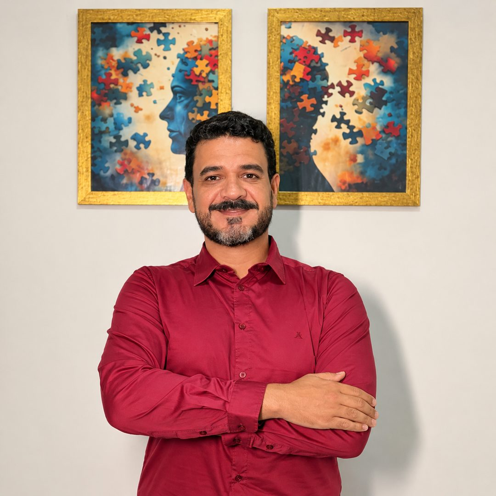

Presencial em Quixadá
Consultório no centro da cidade, com horários de tarde e noite.
Psicólogo · CRP 11/13594
Sou o Ernand. Trabalho com Abordagem Centrada na Pessoa há mais de sete anos, no consultório em Quixadá e por vídeo para todo o Brasil.

Como eu trabalho
Quem sabe da sua vida é você. O meu papel é oferecer uma escuta sem julgamento, em que você possa se ouvir com mais clareza.
Psicoterapia é um processo que acontece de médio a longo prazo. É um processo terapêutico singular e varia a cada cliente.
"O paradoxo curioso é que, quando eu me aceito como sou, então eu mudo."
O que mais chega ao consultório
Toque em um tema para começar a sua mensagem.
Atendimento
Consultório no centro da cidade, com horários de tarde e noite.
Por videochamada, no mesmo formato e com o mesmo valor. Você só precisa de um lugar com privacidade, uma boa conexão com a internet e fones de ouvido (opcional).
Se fizer sentido para você, me mande uma mensagem e podemos tentar encontrar o melhor dia e horário para os nossos encontros. R$ 150,00 por encontro.
Dúvidas comuns
R$ 150 por sessão de 45 minutos, presencial ou online. A forma de pagamento a gente combina na conversa inicial.
Em geral uma vez por semana, no mesmo dia e horário. Quando faz sentido, a gente espaça.
Você conta o que trouxe até aqui e eu explico como trabalho. Não é interrogatório nem diagnóstico. É para ver se combina.
Primeira mensagem
Não precisa estar organizado nem completo. Escreva do jeito que sair. Respondo quando puder.